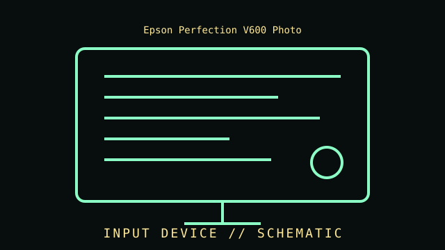

[ INPUT DEVICES // IDENTIFIED COMPONENT ]
Epson Perfection V600 Photo
Flatbed CCD scanner with a built-in transparency unit for supported film formats. Flatbed photo scanner with transparency unit, 2009 generation.

IDENTIFICATION WARNING: Confirm the exact model, SKU, revision, interface, and driver support from the unit label and manufacturer documentation. Product-family names can cover materially different revisions.
Part specifications
| Catalog subcategory | Imaging and audio-capture peripherals |
|---|---|
| Catalog identity | Epson Perfection V600 Photo |
| Generation / family | Flatbed photo scanner with transparency unit, 2009 generation. |
| Optical resolution | 6400 × 9600 dpi maximum optical resolution, as specified by Epson; interpolated output is not optical detail. |
| Scan area | 8.5 × 11.7 in (216 × 297 mm) flatbed; film holders support selected 35 mm and medium-format originals. |
| Interface | USB 2.0 Hi-Speed; requires a compatible host, driver, and scanning application. |
| Imaging | Epson Matrix CCD line sensor; Digital ICE support depends on source media and scanning mode. |
| Identification | Perfection V600 Photo / B11B198011 family; verify regional suffix and label before sourcing parts or drivers. |
Compatibility, care & service
- Confirm host connector, device protocol, operating-system support, driver availability, and required software before installation.
- Check the nameplate, product number, firmware, included cable, stand or film holder, and physical condition; preserve accessories with the device.
- For scanners and cameras, test image capture with a known target and record application, resolution, color mode, and profile. For microphones, document distance, gain, pattern, and recording chain.
- Do not use aggressive cleaners on optics, scanner glass coatings, capsule ports, or connector finishes; follow the manufacturer's care instructions.
Model-specific notes
Optical resolution, interpolated resolution, bit depth, and effective detail are different measurements. Keep the scanner glass clean, avoid pressure on fragile originals, and retain unedited master scans with color/profile and resolution notes.
Sources & further reading
- Epson — Perfection V600 Photo product specificationsManufacturer product reference; check the exact SKU and regional revision against the specimen.
- Epson — Perfection V600 Photo support and manualsManufacturer support/documentation reference for setup, compatibility, or manuals.
Source claims should be checked against the full model number. An advertised maximum is not a guarantee of performance on every host or in every application.